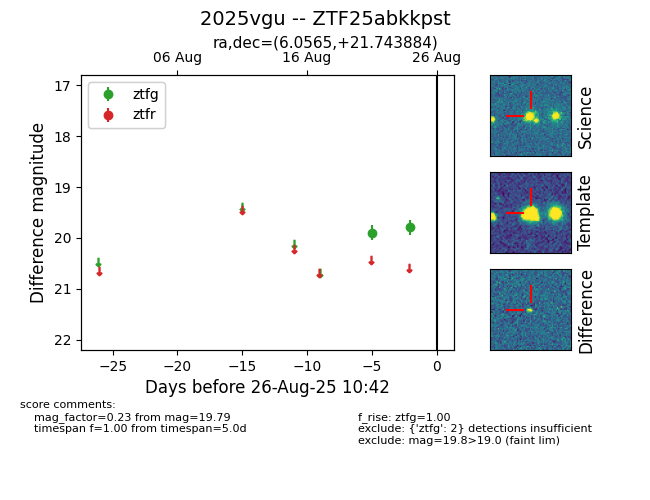

Target 2025vgu at 2025-08-26 10:53, see:
FINK: fink-portal.org/ZTF25abkkpst
Lasair: lasair-ztf.lsst.ac.uk/objects/ZTF25abkkpst
ALeRCE: alerce.online/object/ZTF25abkkpst
TNS: wis-tns.org/object/2025vgu
YSE: ziggy.ucolick.org/yse/transient_detail/2025vgu
alt names
ZTF25abkkpst (ztf,fink)
2025vgu (tns,yse)
coordinates:
equatorial (ra, dec) = (6.0565,+21.74388)
galactic (l, b) = (114.5889,-40.68662)
photometry
last atlaso=19.50, ztfg=19.79
2 atlaso, 2 ztfg detections
